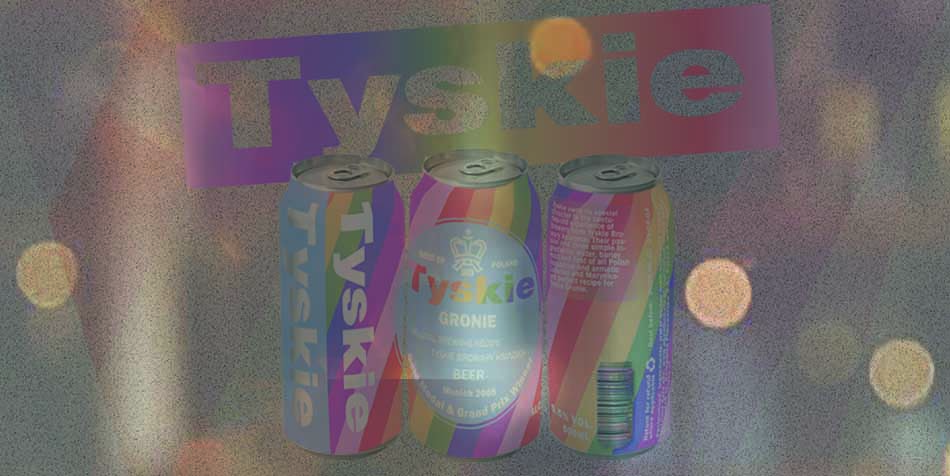

MainImage
Products Page Main Area
Product List
Products
Product1
ProductImage1
Extract 11.6% Alcohol 5.2%
Gentian 20 Color 9 EBC
$4.49
Tyskie is the favorite beer of Poles and "Our Best" abroad. As the only beer from Poland, Tyskie won a "beer oscar"- Grand Prix at The British Brewing Industry Awards.
In addition to malt, hops and water, the most important component of Tyski has always been brewers.
Product2
ProductImage2
Extract 12% Alcohol 5.0%
Gentian 28IBU
Temperature Serving 5-7°C
$6.49
Until the 19th century wheat beers were a specialty in Polish lands. Inspired by these customs, brewers from Tyskie Prince's Breweries created a recipe of Tyski Wheat, a lower fermentation lager brewed with wheat malt.
Product3
ProductImage3
Extract 11.8% Alcohol 4.8%
Gentian 10 IBU Color 14 EBC
$5.53
Tyskie Pilsen is a nod to the Lagers of Pilsen brewed in Tychy in the 1920s. of the last century. The former obitican method was used to make it more than 10 000 years ago.
Plausiais is characterized by a clear bitterness and a clear golden color.